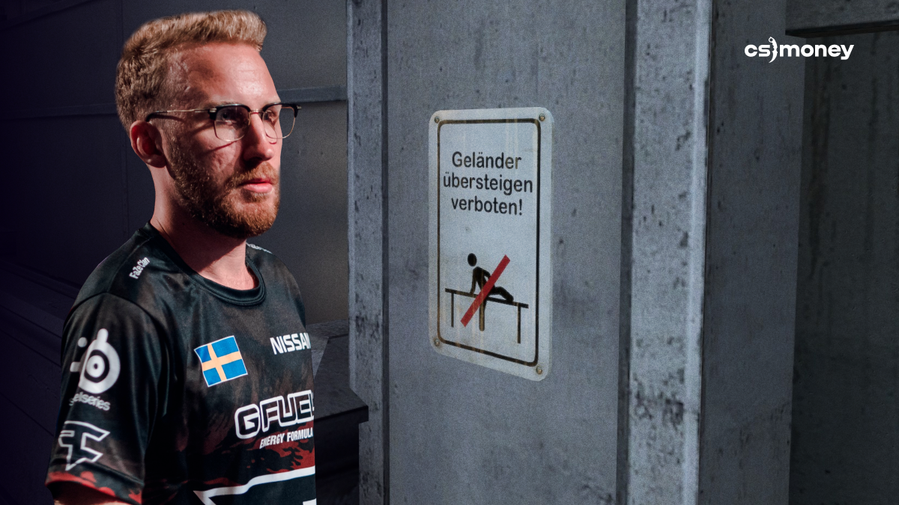

Olofmeister and His Infamous Boost
The Swedish legend is the only player in the world with two memorable dedicated graffiti on Overpass. In the quarter-finals of DreamHack Winter 2014, Fnatic surprised Team LDLC with an unusual boost at the CT spawn. This boost helped the team make a comeback from a score of 3:12 and win the map 16:13.
Unfortunately for Fnatic, this boost was claimed unfair: Olofmeister could see his opponents and kill them, while opponents couldn’t do anything about it. After heated debates, Fnatic forfeited the match, and Team LDLC won the entire tournament. Valve later fixed the possibility of such a boost and added memorable graffiti.